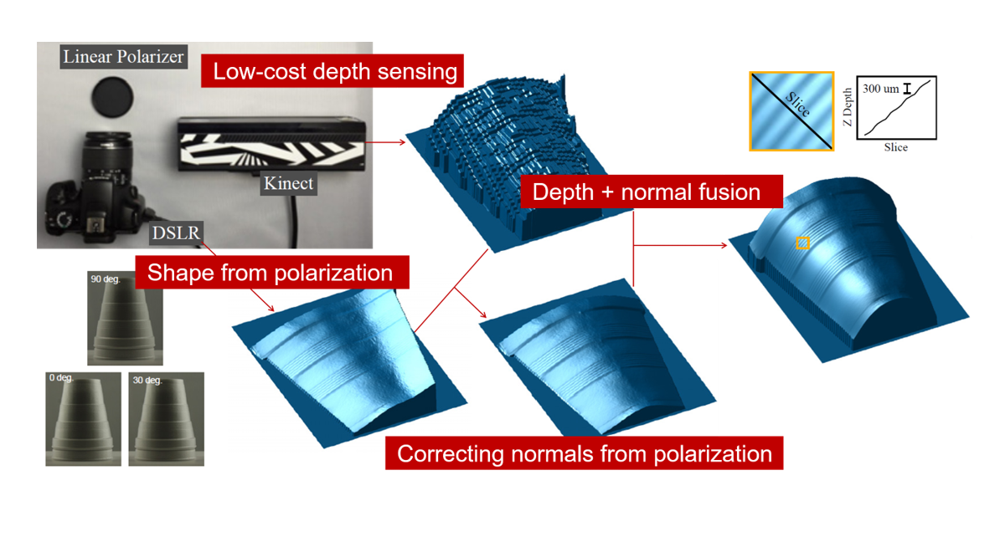

偏光アレイカメラを用いた構造化光法による
深度・法線の高速取得
野元 貴史
1
，田畑 智志
2
，渡辺 義浩
1
1
東京工業大学，
2
東京大学
背景
深度と法線の統合が3次元計測の高精度化に有効
深度と法線を統合することで
3次元形状の高精度化
[Nehab+, 2005]
高速プロジェクタを用いた
位相シフトによる深度取得の高速化
[Tabata+, 2019]
偏光画像を用いた法線取得

[Kadambi+, 2015]
より高速でより高精度な3次元形状の計測が求められている
深度と法線を統合することで3次元形状を高精度化することができる
深度・法線を高速かつ同時に取得することは難しかった
手法概要
偏光アレイカメラを用いた位相シフト法
システム概要
高速プロジェクタと偏光アレイカメラ
を用いた位相シフト法を行うことで，深度・法線を高速かつ同時に取得する
位相シフト法によって深度を，偏光センシングによって法線を取得する
偏光センシングから計算した法線の
低周波ノイズや曖昧性を同時に取得した深度情報を利用して
解消する
偏光センシングは位相シフト法に用いた構造化光を
再利用
することで撮像回数を削減できる
深度と法線を同じ画像を用いて取得しているため、
深度と法線の画素の対応がすでに取れている
各画素ごとに独立して計算可能であるため、GPUを用いた並列計算によって高速化することができる
深度取得
位相シフト法によって深度を取得
位相シフト法によって得られた深度、深度から計算した法線
7 周期の正弦波パターン3 枚と，位相接続のためのグレイコードパターン3枚で位相シフト法をおこなった
位相シフト法によって取得した深度には高周波ノイズが発生している
深度を用いて計算した法線には高周波ノイズの影響を強く受ける
法線取得
偏光解析によって法線を取得
偏光解析によって得られた法線とその方位角・天頂角
偏光解析による法線計測には以下の3つの問題がある．
方位角に$180^\circ$の曖昧性がある
正確な天頂角を求めるためには計測対象の屈折率が分かっている必要がある
偏光度が小さい場合，つまり天頂角が 0 に近い場合に計測した法線のノイズが大きくなる
もっと詳しく
法線の誤差解消
偏光解析によって求めた法線の誤差を深度を用いて解消する
方位角の曖昧性解消
天頂角の低周波ノイズ解消
もっと詳しく
実験
深度・法線の計算は 約 0.4 ms を達成した
CPU : Intel Xeon E5-2687W dual
GPU : NVIDIA GEFORCE RTX 2080 Ti
高速プロジェクタ :
DynaFlash
(1024×768 pixel 280 fpsで投影)
偏光アレイカメラ : BFS-U3-51S5P-C USB3 Blackfly S
(720×540 pixel 280 fpsで撮像)
プロジェクタの投影とカメラの撮像は同期されていた
実験システム